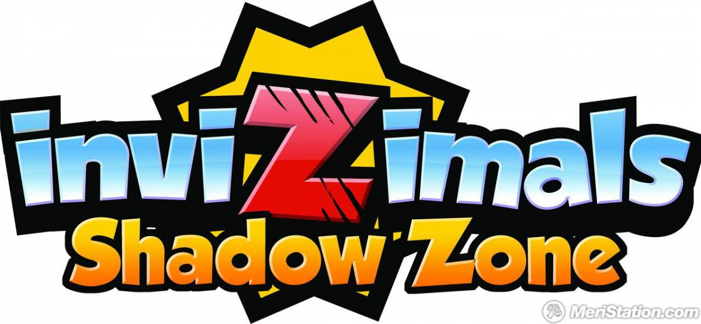

Invizimals
Invizimals Las tribus perdidas
Las tribus perdidas El reino escondido
El reino escondido La alianza
La alianza La resistencia
La resistencia
Es el 3º juego de la saga de Invizimals desarrollado por Novarama
La otra dimensión, contigo convertido en el Héroe que trata de encontrar a Keni tras haber desaparecido en la otra dimensión, y si eres nuevo en la franquicia, el juego te permitirá comenzar una nueva aventura con Jasmin, Alex y la pandilla. Esta vez habrá 150 Invizimals, el máximo de criaturas que jamás hemos tenido en un título de Invizimals, con 70 de ellos completamente nuevos y 80 de los Invizimals favoritos de la comunidad de los juegos anteriores para que los captures, entrenes, personalices y luches.
| Invizimals |
La otra dimension | Las tribus perdidas |
| El reino escondido |
La alianza |
La resistencia |